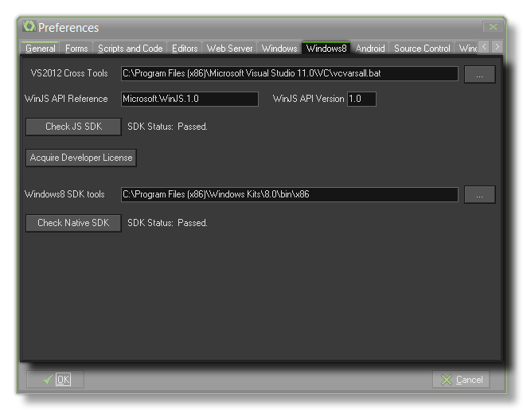

 Here you can set up
the preferences that GameMaker: Studio is going to use with
your installation of Windows8 for testing games. Before stating to
use the Windows8 target platform you must have installed the
Visual Studio Express 2012 SDK that supports building
Windows Store JavaScript applications (this can be found here). Once that is installed the values for these
preferences should be automatically generated. If these values are
incorrect or are not generated automatically for you, you should do
the following:
- Make sure that the section titled VS2012 Cross Tool points to the "vcvarsall.bat" in your MS Visual Studio installation. Without this you won’t be able to successfully create Windows Store packages.
- The WinJS API reference and WinJS Api Version need to match with the WinJS API that comes with your version of Visual Studio. To check this, create a blank Windows Store JavaScript app in Visual Studio and, under References, right-click the Windows Library for JavaScript reference and select Properties. You should see an SDK Identity property that tells you all you need to correctly fill out these details.
You should also note that for GameMaker: Studio to
generate your app correctly, you will need a Developer Key.
Please refer to the section Global Game Settings
- Windows8 Tab: Installation.
Next you need to point GameMaker: Studio to the Windows 8
SDK Tools which you can find in the folder "../Windows
Kits/8.0/bin/x86". Finally you should click on the Check Native
SDK button to confirm that your selections are okay and that
everything works as it should. If you get an error or you are not
sure that your Developer Licence is correct, you may also click on
the button labelled Acquire Developer Licence which will
open up a command prompt and automatically go through the necessary
steps to get you one.